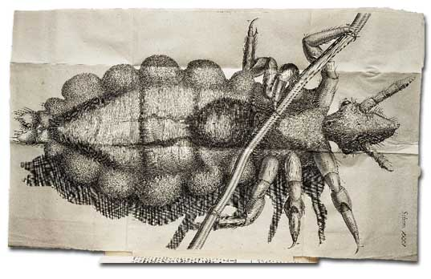

This is a Creature so officious, that 'twill be known to every one at one time or other, so busie, and so impudent, that it will be intruding it self in every ones company, and so proud and aspiring withall, that it fears not to trample on the best, and affects nothing so much as a Crown; feeds and lives very high, and that makes it so saucy, as to pull any one by the ears that comes in its way, and will never be quiet till it has drawn blood: it is troubled at nothing so much as at a man that scratches his head, as knowing that man is plotting and contriving some mischief against it, and that makes it oftentime sculk into some meaner and lower place, and run behind a mans back, though it go very much against the hair; which ill conditions of it having made it better known then trusted, would exempt me from making any further description of it, did not my faithful Mercury, my Microscope, bring me other information of it.
For this has discovered to me, by means of a very bright light cast on it, that it is a Creature of a very odd shape ; it has a head shap'd like that exprest in 35. Scheme marked with A, which seems almost Conical, but is a little flatted on the upper and under sides, at the biggest part of which, on either side behind the head (as it were, being the place where other Creatures ears stand) are placed its two black shining goggle eyes B B, looking backwards, and fenced round with several small cilia or hairs that incompass it, so that it seems this Creature has no very good foresight: It does not seem to have any eyelids, and therefore perhaps its eyes were so placed, that it might the better cleanse them with its forelegs; and perhaps this may be the reason, why they so much avoid and run from the light behind them, for being made to live in the shady and dark recesses of the hair, and thence probably their eye having a great aperture, the open and clear light, especially that of the Sun, must needs very much offend them; to secure these eyes from receiving any injury from the hairs through which it passes, it has two horns that grow before it, in the place where one would have thought the eyes should be; each of these C C have four joynts, which are fringed, as 'twere, with small brisles, from which to the tip of its snout D, the head seems very round and tapering, ending in a very sharp nose D, which seems to have a small hole, and to be the passage through which he sucks the blood.

Now whereas it if be plac'd on its back, with its belly upwards, as it is in the 35. Scheme, it seems in several Positions to have a resemblance of chaps, or jaws, as is represented in the Figure by E E, yet in other postures those dark strokes disappear; and having kept several of them in a box for two or three dayes, so that for all that time they had nothing to feed on, I found, upon letting onecreep on my hand, that it immediately fell to sucking, and did neither seem to thrust its nose very deep into the skin, nor to open any kind of mouth, but I could plainly perceive a small current of blood, which came directly from its snout, and past into its belly; and about A there seem'd a contrivance, somewhat resembling a Pump, pair of Bellows, or Heart, for by a very swift systole and diastole the blood seem'd drawn from the nose, and forced into the body.
It did not seem at all, though I viewed it a good while as it was sucking, to thrust more of its nose into the skin then the very snout D, nor did it cause the least discernable pain, and yet the blood seem'd to run through its head very quick and freely, so that it seems there is no part of the skin but the blood is dispers'd into, nay, even into the cuticula; for had it thrust its whole nose in from D to C C, it would not have amounted to the supposed thickness of that tegument, the length of the nose being not more then a three hundredth part of an inch.
It has six legs, covered with a very transparent shell, and joynted exactly like a Crab's, or Lobster's; each leg is divided into six parts by these joynts, and those have here and there several small hairs; and at the end of each leg it has two claws, very properly adapted for its peculiar use, being thereby inabled to walk very securely both on the skin and hair; and indeed this contrivance of the feet is very curious, and could not be made more commodiously and compendiously, for performing both these requisite motions, of walking and climbing up the hair of a mans head, then it is : for, by having the lesser claw (a) set so much short of the bigger (b) when it walks on the skin the shorter touches not, and then the feet are the same with those of a Mite, and several other small Insects, but by means of the small joynts of the longer claw it can bend it round, and so with both claws take hold of a hair, in the manner represented in the Figure, the long transparent Cylinder F F F, being a Man's hair held by it.
The Thorax seem'd cas'd with another kind of substance then the belly, namely, with a thin transparent horny substance, which upon the fasting of the Creature did not grow flaccid; through this I could plainly see the blood, suck'd from my hand, to be variously distributed, and mov'd to and fro; and about G there seem'd a pretty big white substance, which seem'd to be moved within its thorax; besides, there appear'd very many small milk-white vessels, which crost over the breast between the legs, out of which, on either side, are many small branchings, these seem'd to be the veins and arteries, for that which is analogus to blood in all Insects is milk-white.
The belly is covered with a transparent substance likewise, but more resembling a skin then a shell, for 'tis grain'd all over the belly just like the skin in the palms of a man's hand, and when the belly is empty, grows very flaccid and wrinkled ; at the upper end of this is placed the stomach H H, and perhaps also the white spot I I may be the liver, or pancreas, which by the peristaltick motion of the guts, is a little mov'd to and fro, not with a systole and diastole, but rather with a thronging or justling motion.
Viewing one of these Creatures, after it had fasted two dayes, all the hinder part was lank and flaccid, and the white spot I I hardly mov'd, most of the white branchings disappear'd, and most also of the redness or sucked blood in the guts, the peristaltick motion of which was scarce discernable; but upon the suffering it to suck, it presently fill'd the skin of the belly, and of the six scolop'd embosments on either side, as full as it could be stuft ; the stomach and guts were as full as they could hold; the peristaltick motion of the gut grew quick, and the justling motion of I I accordingly ; multitudes of milk-white vessels seem'd quickly filled, and turgid, which were perhaps the veins and arteries, and the Creature was so greedy, that though it could not contain more, yet it continued sucking as fast as ever, and as fast emptying it self behind : the digestion of this Creature must needs be very quick, for though I perceiv'd the blood thicker and blacker when suck'd, yet, when in the guts, it was of a very lovely ruby colour, and that part of it, which was digested into the veins, seemed white; whence it appears, that a further digestion of blood may make it milk, at least of a resembling colour : What is else observable in the figure of this Creature, maybe seen by the 35. Scheme.